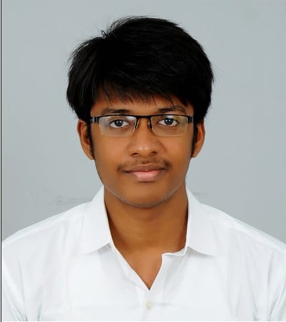

FOUNDER OF THE HOSPITAL
The founder of PRASANNA Hospital is Dr.S.Prasannapathi, who has tirelessly worked for the hospital to bring its present
reputation and trust. Born at Namakkal, he completed his MBBS at Stanley Medical College, Chennai in 2018 and his MD in Internal
Medicine at University of California, Sanfrancisco in 2021. He is also proud member of the Fellowship of the Academy of Medicine, UK.
He is also the CEO of his own PRASANNA TECH company, North Carolina, United States of America. This PRASANNA Hospital is started by him
in 2021 to help the needy .
OUR VISION
To showcase to the world the best in patient care, surgical expertise, academics, medical ethics and state of the art technology.
To be a centre which will be a pride of our country.
OUR MISSION
To provide quality treatment at an affordable cost so that the expertise will be available to every citizen of our country.